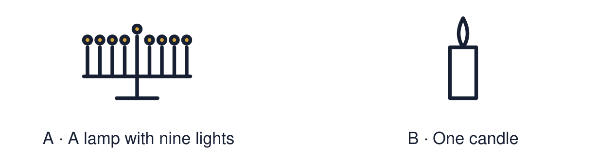

Arrival choices
Previous lesson reminder:

Start with 1 and 2. Try 3 and 4 when ready. Reading and exact scribing are available.
1 Name one thing light can represent at Diwali.
Support: Use the reminder strip or talk it through with an adult.
2 Which meaning fits Hanukkah?
Support: Choose: A Jewish festival of lights that lasts eight nights OR The Hanukkah lamp, also called a hanukkiah, with eight lights and a helper light.
3 Give one meaning of light at Hanukkah.
Support: Use the model evidence anchor C, D or read one relevant card together.
4 How many nights does Hanukkah last?
Support: Give a reason when ready.
Stretch: use a precise example or explain which detail supports your answer.
Evidence cards
Read, point or listen. Keep the source label with any detail you use.
A The Temple
Over 2,000 years ago the Jewish Temple in Jerusalem was taken over and misused by a foreign ruler.
Source: Authored retelling; see Chabad, What is Hanukkah
Limit: This is a short retelling of a longer history.
B The Maccabees
A small group of Jewish fighters, the Maccabees, won the Temple back.
Source: Authored retelling; see Chabad, What is Hanukkah
Limit: This is a short retelling of a longer history.
C The oil
They rededicated the Temple and lit its lamp. Tradition says there was only enough pure oil for one day, but it lasted eight.
Source: Authored retelling; see Chabad, What is Hanukkah
Limit: The oil story is a religious tradition.
D Hanukkah today
Jewish families light one more light each night for eight nights. The lights recall the rededication and stand for faith and hope.
Source: Authored summary; see Chabad, What is Hanukkah
Limit: Jewish families celebrate in different ways.
Shared investigation
1. Put the four story cards in order.
2. Connect the light to remembrance, faith or hope.
Work with a partner or adult, or use your own table. One person suggests; the other checks the evidence. Swap after one turn. Passing is allowed.
Move or match the cards
| Cards to use |
|---|
| Families light the menorah for eight nights |
| The lamp is lit and the oil lasts eight days |
| The Maccabees win the Temple back |
| The Temple is taken over and misused |
Support: Read one evidence card together. Highlight a useful detail. Rehearse with: At Hanukkah people ___. This means ___.
Further challenge: Compare the meaning of light at Hanukkah with the meaning of light at Diwali.
Supported independent task
Complete this route only. Describe how light is used at Hanukkah and explain one meaning it can represent.
1. Put three story cards in order.
2. Match the menorah picture to one meaning word.
3. Say or finish: The light means ___.
Support: Read one evidence card together. Highlight a useful detail. Rehearse with: At Hanukkah people ___. This means ___. Complete the organiser one space at a time. At Hanukkah people ___. This means ___.
An adult may read or scribe your exact response. They should not choose the answer.
Standard independent task
Complete this route only. Describe how light is used at Hanukkah and explain one meaning it can represent.
1. Answer “What happens?” in one or two sentences.
2. Answer “What does it mean?” using faith, hope or remembrance.
3. Check your answer against card D.
Support: At Hanukkah people ___. This means ___.
Check the required evidence and revise one detail.
Stretch independent task
Complete this route only. Describe how light is used at Hanukkah and explain one meaning it can represent.
1. Answer both questions in your own words.
2. Explain why one more light is added each night.
3. Compare one meaning of light with Diwali.
Support: Choose the evidence independently. Use the frame only if it helps.
Compare the meaning of light at Hanukkah with the meaning of light at Diwali.
Exit ticket
Choose a response mode. You may give your answers privately to an adult.
Give one meaning of light at Hanukkah.
How many nights does Hanukkah last?
Support: At Hanukkah people ___. This means ___.
Further challenge: Compare the meaning of light at Hanukkah with the meaning of light at Diwali.